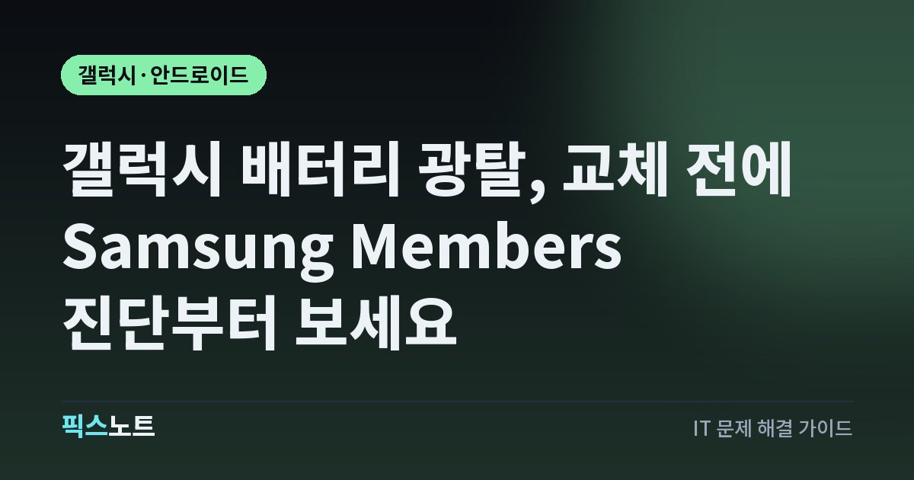

갤럭시 배터리 광탈, 교체 전에 Samsung Members 진단부터 보세요
갤럭시 배터리가 빨리 닳을 때 정상 원인과 배터리 노화를 가르고, 설정으로 소모를 줄이는 순서예요.

아침에 꽉 채워 나갔는데 점심도 되기 전에 갤럭시 배터리가 반 토막 나면, 배터리를 바꿔야 하나 고민되죠. 그런데 삼성은 새 폰을 쓰기 시작한 처음 며칠은 앱과 서비스를 최적화하느라 배터리를 더 쓸 수 있다고 안내해요. 교체가 필요한 노화인지, 설정으로 줄일 수 있는 소모인지부터 가려야 돈과 시간을 아낄 수 있어요. 삼성 공식 안내를 기준으로 순서대로 정리했어요.
결론부터: 새 폰이면 며칠 지켜보고, 오래 쓴 폰이면 진단부터
삼성은 갤럭시 배터리가 빨리 닳는 이유로 사용 환경, 백그라운드 앱, 배터리 상태를 꼽아요. 그중 새 폰에서 흔한 건 초기 설정 기간이에요. 처음 며칠은 여러 앱과 서비스가 최적화되느라 배터리 소모가 잠깐 늘 수 있고, 최적화가 끝나면 정상으로 돌아와요.
반대로 1~2년 넘게 쓴 폰이라면 배터리 자체를 의심할 때예요. 삼성은 배터리를 소모품이라고 설명해요. 충전과 방전을 반복하면 용량이 서서히 줄고, 줄어든 용량은 되돌릴 수 없어요.
1분 확인: Samsung Members로 배터리 상태 진단
배터리가 노화됐는지는 감으로 판단하기 어려워요. 삼성은 Samsung Members 앱의 진단 기능으로 배터리 상태를 확인하라고 안내해요.
- Samsung Members 앱을 열고 아래쪽의 ‘지원’을 눌러요.
- 휴대전화 진단에서 ‘시작하기’를 눌러요.
- 진단 항목 중 ‘배터리 상태’를 골라 결과를 확인해요.
- 진단이 시작되지 않으면 삼성 인터넷 브라우저에서 진단 페이지를 열어 다시 시도해요.
범인 찾기: 배터리 그래프에서 많이 쓰는 앱
배터리 상태가 괜찮다면 소모의 원인은 대부분 앱이에요. 내려받은 앱 중 일부는 배터리를 지나치게 많이 쓸 수 있어요.
- 설정 > 배터리로 들어가요.
- 배터리 사용 그래프를 눌러요.
- 앱별 사용량 목록에서 많이 쓰는 앱을 눌러 자세한 배터리 사용량을 확인해요.
- 자주 쓰지도 않는데 상위에 있는 앱이라면 ‘삭제’를 눌러 지워요.
안 쓰는 앱 재우기: 백그라운드 사용 제한
앱을 지우기는 아깝지만 가끔만 쓴다면 재워 두는 방법이 있어요. 뒤에서 몰래 돌아가는 앱이 많을수록 배터리를 더 쓰기 때문이에요.
- 설정 > 배터리 > 백그라운드 사용 제한으로 들어가요.
- 앱을 재우는 목록을 골라요. 삼성 안내 기준으로 가볍게 재우는 단계(Sleeping)와 백그라운드 실행을 아예 막는 단계(Deep sleeping) 두 가지가 있어요.
- 더하기(+) 아이콘을 누르고 자주 안 쓰는 앱을 골라 추가해요.
신호 약한 곳, 안 쓰는 기능 끄기, 가끔 재시작
배터리는 폰이 놓인 환경에도 영향을 받아요. 삼성은 네트워크 연결이 불안정하면 통화 품질과 신호가 약해지면서 배터리가 더 빨리 닳을 수 있다고 안내해요.
- 지하나 건물 안쪽처럼 신호가 약한 곳에서만 유독 빨리 닳는지 비교해 봐요. 가능하면 신호가 강한 곳으로 옮기면 소모가 줄어요.
- 화면 오른쪽 위에서 아래로 쓸어내려 빠른 설정 창을 열어요.
- 지금 안 쓰는 Wi-Fi, 블루투스, 위치(GPS) 같은 기능을 꺼요.
- 폰을 가끔 다시 시작해요. 삼성은 주기적인 재시작이 배터리 소모를 줄이고 성능을 유지하는 데 도움이 된다고 설명해요.
급할 땐 절전 모드, 정리는 디바이스 케어
당장 충전이 어려운 날엔 절전 모드가 가장 확실한 응급처치예요. 절전 모드를 켜면 안 쓰는 앱의 백그라운드 데이터 사용을 막고, 올웨이즈 온 디스플레이 같은 전력을 많이 쓰는 기능을 꺼서 사용 시간을 늘려요.
- 설정 > 배터리 > 절전 모드로 들어가요.
- 절전 모드를 켜고, 필요하면 CPU 속도 제한, 화면 밝기 낮추기, 다크 모드 같은 추가 옵션을 골라요.
- 설정 > 디바이스 케어로 들어가 ‘지금 최적화’를 눌러요. 필요 없는 파일과 백그라운드 앱을 정리해 줘요.
이런 증상이면 배터리 노화예요: 교체 시점
설정을 다 바꿨는데도 그대로라면 배터리 노화를 의심해야 해요. 삼성은 노화의 대표 신호로 사용 시간이 크게 줄어드는 것과 예기치 않게 꺼지는 것을 꼽아요.
- 화면에는 배터리가 넉넉히 남았다고 나오는데 갑자기 꺼진다.
- 추운 날 바깥에서 유독 자주 꺼진다. 노화가 심할수록 더 자주 생겨요.
- 게임이나 카메라처럼 무거운 앱에서 성능이 떨어지고 반응이 느려진다.
- 폰에 배터리 교체가 필요하다는 알림이 뜬다.
이런 증상이 반복되면 가까운 삼성전자서비스 센터에서 점검을 받으세요. 삼성은 보증 조건에 따라 무상 교체 대상일 수도 있다고 안내해요.
주의: 배터리 아끼려다 손해 보는 실수
배터리를 살리겠다고 한 일이 오히려 불편을 키울 때가 있어요.
- 서둘러 초기화하기: 초기화하면 앱과 서비스를 다시 최적화하는 기간이 생겨서 처음 며칠은 오히려 배터리를 더 쓸 수 있어요. 진단과 설정 점검을 먼저 하세요.
- 필요한 앱까지 깊게 재우기: 알람, 인증, 메신저 앱을 깊게 재우면 중요한 알림을 놓쳐요.
- 진단 없이 배터리부터 교체하기: 앱 하나가 원인이라면 새 배터리도 똑같이 빨리 닳아요.
자주 묻는 질문
새로 산 갤럭시인데 배터리가 빨리 닳아요. 불량인가요?
삼성은 처음 쓰기 시작한 며칠 동안 여러 앱과 서비스가 최적화되면서 배터리 소모가 잠깐 늘 수 있다고 안내해요. 최적화가 끝나면 정상으로 돌아오니 며칠은 평소처럼 쓰면서 지켜보세요.
갤럭시 배터리 수명은 어디서 확인하나요?
Samsung Members 앱에서 ‘지원’을 누르고 휴대전화 진단을 시작한 뒤 ‘배터리 상태’를 고르면 확인할 수 있어요. 메뉴 이름은 기종과 앱 버전에 따라 조금 다를 수 있어요.
앱을 재우면 알림이 아예 안 오나요?
가볍게 재운 앱은 새로 고침과 알림이 바로 오지 않을 수 있고, 깊게 재운 앱은 백그라운드에서 전혀 실행되지 않아 직접 열 때만 작동해요. 알림이 꼭 필요한 앱은 재우지 마세요.
배터리 교체는 무료로 받을 수 있나요?
삼성은 기기의 보증 조건에 따라 무상 교체 대상이 될 수도 있다고 안내해요. 갑자기 꺼지거나 사용 시간이 크게 줄었다면 삼성전자서비스 센터에서 점검을 받고 보증 적용 여부를 확인하세요.